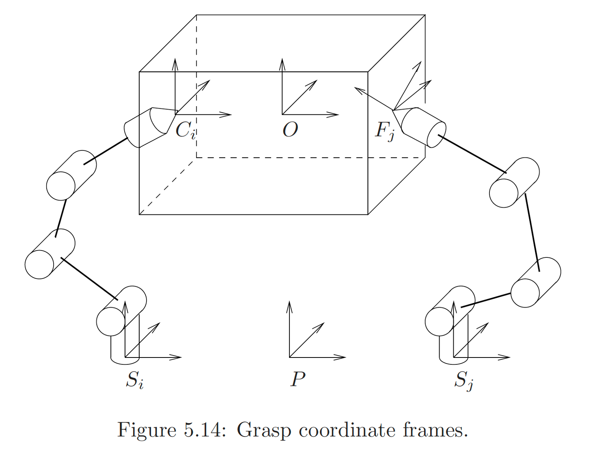
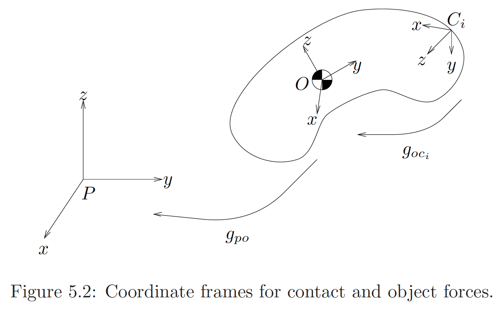
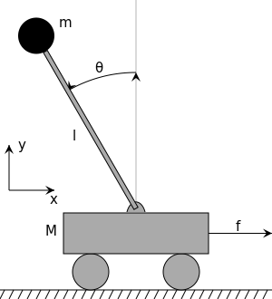

L10: Constraint Force Computation, Control
Hao Su
Spring, 2021
Agenda
click to jump to the section.Review: Lagrangian Function
- Let \(q\in\bb{R}^n\) be the generalized coordinates.
- Lagrangian function: \(L(q, \dot{q})=T(q,\dot{q})-V(q)\)
- \(T(q,\dot{q})\): kinetic energy of system
- \(V(q)\): potential energy (given by some conservative force, e.g., gravity, electric field force)
Review: The Principle of Stationary Action
- Given a pair of time instants, \(t_1\) and \(t_2\)
- What is the curve \(\mv{q}:[t_1, t_2]\to \cal{C}\) in the configuration space \(\cal{C}\)?
- Action is defined to be a functional of \(\mv{q}(t)\): \[ S[\mv{q}]=\int_{t_1}^{t_2} L(q, \dot{q}) \d{t} =\int_{t_1}^{t_2} [T(\mv{q}, \dot{\mv{q}})-V(\mv{q})] \d{t} \]
Review: The Principle of Stationary Action
- The actual curve \(\mv{q}(t)\) is a stationary point of the \(S[\mv{q}]\): \[ \forall \mv{\delta}:[t_1, t_2]\to \cal{C},\quad \lim_{\epsilon\to 0}\frac{1}{\epsilon}(S[\mv{q}+\epsilon \mv{\delta}]-S [\mv{q}])=0 \tag{1} \]
- Note: Treating $\mv{q}$ as a variable, and (1) is an extension of the first-order optimality condition that we use in calculus: \[ \nabla_{q}S[q]=0 \]
- Using variational method, condition (1) becomes \[ \frac{\d{}}{\d{t}}\frac{\partial L}{\partial \dot{q}}-\frac{\partial L}{\partial q}=0 \]
Review: Euler-Lagrange Equation
- When there are external non-conservative generalized force \(\mv{F}\in\bb{R}^n\) added to the system (e.g., torque at robot arm joints), we have the following Euler-Lagrange equation: \[ \mv{F}=\frac{\d{}}{\d{t}}\frac{\partial L}{\partial \dot{q}}-\frac{\partial L}{\partial q}\tag{Euler-Lagrange Equation} \]
Example: Robot Arm
Robot Arm
- For kinematic chains with $n$ joints, it is convenient and always possible to choose the joint angles $\theta=(\theta_1,\ldots,\theta_n)$ and the joint torques $\tau=(\tau_1,\ldots,\tau_n)$ as the generalized coordinates and generalized forces, respectively.
- If joint $i$ is revolute: $\theta_i$ joint angle and $\tau_i$ is joint torque
- If joint $i$ is prismatic: $\theta_i$ joint position and $\tau_i$ is joint force
- Then, the joint force/torque $\tau$ and joint angular/linear velocity $\dot{\theta}$ form dual pairs.
- Lagrangian Equations: \[ \tau_i=\ddt\pLp{\dot{\theta}_i}-\pLp{\theta_i} \]
Review of Notations for Robot Arms
For each link $i\in\{1,\ldots,n\}$, the corresponding body-frame $\cal{F}_i$ is attached to the center of mass of link $i$. All the following quantities are expressed in $\cal{F}_i$- $\mxi^b_i$: body twist of the link frame $\cal{F}_i$
- $\f{M}_i^b=\bm{m_i\rm{Id}_{3\times 3}& 0\\0 & \mv{I}^b_i }$: body inertia matrix
- Kinetic energy of link $i$: $T_i=\frac{1}{2}(\mxi_i^b)^T \f{M}^b_i\mxi_i^b$
- $J^b_i\in\bb{R}^{6\times n}$: body Jacobian of link $i$ (so that we have the forward dynamics $\mv{\xi}^b_i=J^b_i\dot{\theta}$)
Kinetic and Potential Energies
- Total kinetic energy: \[ T(\theta,\dot{\theta})=\frac{1}{2}\sum_{i=1}^n (\mxi^b_i)^T\f{M}^b_i\mxi^b_i=\frac{1}{2}\dot{\theta}^T\underbrace{(\sum_{i=1}^n(J^b_i(\theta)\f{M}^b_i J^b_i(\theta)))}_{\mv{M}^b(\theta)}\dot{\theta}:=\frac{1}{2}\dot{\theta}^T\mv{M}^b(\theta)\dot{\theta} \]
- Potential energy:
\[
V(\theta)=\sum_{i=1}^n m_i g h_i(\theta)
\]
- $h_i(\theta)$: height of center of mass of link $i$
Lagrangian Equation
- Plug $L=T-V$ into $\lagrangian$, and we have
- $\tau_i=\ddt\pLp{\dot{\theta}}-\pLp{\theta_i}$ \[ \tau_i=\sum_{j=1}^n M^b_{ij}(\theta)\ddot{\theta}_j+\sum_{j=1}^n\sum_{k=1}^n\Gamma^b_{ijk}(\theta)\dot{\theta}_j\dot{\theta}_k+\frac{\partial V}{\partial \theta_i} \] $M^b_{ij}$ is the $(i, j)$-th entry of matrix $\mv{M}^b$
- $\Gamma^b_{ijk}(\theta)$ is called the Christoffel symbols of the first kind \[ \Gamma^b_{ijk}(\theta)=\frac{1}{2}\left(\frac{\partial M^b_{ij}}{\partial \theta_k}+\frac{\partial M^b_{ik}}{\partial \theta_j}-\frac{\partial M^b_{jk}}{\partial \theta_i}\right) \]
Lagrangian Equation
- Lagrangian equation in vector form:
\[
\tau=\mv{M}^b(\theta)\ddot{\theta}+C^b(\theta,\dot{\theta})\dot{\theta}+g^b(\theta)
\]
- $C^b_{ij}(\theta,\dot{\theta}):=\sum_{k=1}^n \Gamma^b_{ijk}\dot{\theta}_k$ is called the Coriolis matrix
- Recall that in the body-frame Newton Euler equation, we also have a Coriolis term that comes from the derivative of the rotational inertia ($\mv{\tau}^b=\mv{I}^b\dot{\mv{\omega}}^b+\mv{\omega}^b\times \mv{I}^b\mv{\omega}^b$). It was used to compensate for the rotational acceleration of the body frame.
- This $C^b_{ij}(\theta,\dot{\theta})$ also comes from taking the derivative of $\mv{M}^b$ w.r.t. $\theta$. Because $\mv{M}^b$ and $\mxi^b$ are described in the body frame in our derivation, we also need this Coriolis term to compensate for the movement of the body frame.
- $g^b(\theta)$ is due to gravity in our derivation. If there are other external forces (e.g., friction), it would also show up here.
- $C^b_{ij}(\theta,\dot{\theta}):=\sum_{k=1}^n \Gamma^b_{ijk}\dot{\theta}_k$ is called the Coriolis matrix
- Equations for a simple arm
- Equations for PUMA 560 Arm
Are We Done Yet?
- Let us use the tools to solve our grasping example
- Suppose that each arm has 3 joints with motors installed.
- The degree-of-freedom (independent coordinates) of the system is: $2\times 3+6=12$ including both two arms and the rigid object.
- If we would like control the robot to hold the box firmly, the degree-of-freedom will reduce due to constraints.
- How to solve FD/ID for this system?
- Additionally, if we are to keep the box static, among many $\tau$ candidates, we want to choose one by the contact force and torque. However, our previously developed tool does not tell us about these quantities!

Constrained Lagrangian Method
Constrained Lagrangian Method
- Our previous Lagrangian method uses independent coordinates to describe the state of the system
- Sometimes, we are interested in the situation happening not at these independent coordinates (e.g., in the grasping example, we are interested in the internal forces at the contact points).
- We augment our previous Lagrangian methods to answer such query.
Review: Contact Coordinate Frame
- We build a contact frame \(C_i\) at each contact point
- The \(z\)-axis of the frame points inward along surface normal
- When recording force and torque at the contact point, it is natural to set \(C_i\) as the observer's frame, i.e., \[ \mv{F}^{C_i}=\begin{bmatrix}\mv{f}^{C_i}\\\mv{\tau}^{C_i}\end{bmatrix} \]

Step 1: Adding Generalized Coordinates
for Constraint Force
- We assign additional generalized coordinates at the constraints.
- E.g., we add the 6D pose of the contact frames at the end of the two finger tips as the generalized coordinates.
- So the generalized velocities are the twists at the finger tips $\mxi^{C_i}$.
- These additional generalized coordinates have their corresponding generalized forces (our query).
- In our example, the additional generalized forces are the internal forces ($\mv{f}^{C_i}$ and $\mv{\tau}^{C_i}$) at the contact points $\mv{F}^{C_i}$.
Step 2: Adding Constraints
- While assigning the additional generalized coordinates, we also need to add constraints.
- In our example, $\mxi^{C_i}$ must conform to two sets of constraints:
- All contact frames must move in accordance with the movement of the object;
- All contact frames must move in accordance with the movement of the arms.
Step 2: Adding Constraints
"All contact frames must move in accordance with the movement of the object."
- Assume the body frame twist of the box is $\mxi^{b}$.
- Then, $\mxi^{C_i}=[\rm{Ad}_{C_i\to b}]\mxi^{b}\quad \forall i$.
"All contact frames must move in accordance with the movement of the arms."
- The body frame twist of the contact frame is $\mxi^{C_i}$.
- We can develop the hand Jacobian as $\mxi^{C_i}=J^{C_i}(\theta)\dot{\theta}\quad \forall i$.
Constraints for Augmented
Generalized Velocities
- We put all constraints over generalized velocities in a linear equation: \[ A(q)\dot{q}=0, \quad\mbox{where } A(q)\in\bb{R}^{m\times n} \]
- $m$: number of constraints
- $n$: dimension of generalized coordinates
- After some infinitesimal time internal $\delta t$, the displacement of the generalized coordinates is $\delta q=\dot{q}\delta t$. We rewrite the constraints as \[ A(q)\delta q=0 \]
A Few More Words on Constraints
- A constraint on a mechanical system restricts the motion of the system by limiting the set of paths that the system can follow.
- Holonomic constraints:
- Roughly speaking, the constraint $A(q)\delta{q}=0$ does not depend on $\dot{q}$ (e.g., our grasping example)
- Strictly speaking, a constraint is said to be holonomic if it restricts the motion of the system to a smooth hyper-surface in the (unconstrained) space $\cal{C}$.
- Example of Nonholonomic constraints:
- No-side-slip constraint of wheeled robot: Due to rolling friction, a car can only move along the velocity direction, thus the constraint is velocity-based ($A(q, \dot{q})\delta q=0$), and cannot be written as purely position-based.
Variational Method
Some Tricky (but Sloppy) Math is Coming!
source: Plants vs Zombies V3
Background: Unconstrained Function Optimization
- For some $f:\bb{R}^n\to \bb{R}$, let us solve the optimization problem \[ \underset{x}{\mbox{minimize}} \quad f(x) \]
- The first-order Taylor's expansion of $f(x)$ is \[ f(x+\delta x)-f(x)=\nabla f(x)^T\delta x+o(\delta x) \]
- The optimal point must be a stationary point, i.e., the first-order term diminishes: \[ \nabla f(x^*)^T\delta x=0 \]
- Because the problem is unconstrained, $\delta x$ can vary along any direction.
- Therefore, $\nabla f(x^*)=0$ is a necessary condition.
Background: Constrained Function Optimization
- For some $f:\bb{R}^n\to \bb{R}$, let us solve the optimization problem \[ \aligned{ &\underset{x}{\mbox{minimize}} & &f(x)\\ &\mbox{subject to} & &Ax=0, \qquad A\in\bb{R}^{m\times n} } \]
- The first-order Taylor's expansion of $f(x)$ is \[ f(x+\delta x)-f(x)=\nabla f(x)^T\delta x+o(\delta x) \]
- The optimal point must be a stationary point, i.e., the first-order term diminishes for variations in the constraint set: \[ \forall \delta x: A\delta x=0, \nabla f(x^*)^T\delta x=0 \]
- $\delta x\in Null(A)$ and $\nabla f(x^*)^T\perp \delta x$ implies that $\nabla f(x^*)=-A^T\lambda$ for some $\lambda\in\bb{R}^{m}$
Background: Constrained Function Optimization
- Optimality Condition: \[ \left\{ \aligned{ &\nabla f(x)+A^T\lambda=0&&\rm{(stationarity)}\\ &Ax=0&&\rm{(feasibility)}\\ }\right. \]
Principle of Stationary Action (Unconstrained)
- Given some $q:[t_1,t_2]\to \cal{C}$, assume a small perturbation function $\delta q:[t_1,t_2]\to\cal{C}$ such that \[\delta q(t_1)=\delta q(t_2)=0\]
- For the functional $S[q]=\int_{t_1}^{t_2}L(q, \dot{q})\d{t}$, the first-order variation is \[ \aligned{ \delta S=S[q+\delta q]-S[q]&=\int_{t_1}^{t_2}L(q+\delta q, \dot{q}+\delta \dot{q})-L(q, \dot{q})\\ &=\int_{t_1}^{t_2}L(q,\dot{q})+\left(\pLp{q}\right)^T\delta q+\left(\pLp{\dot{q}}\right)^T\delta \dot{q}-L(q,\dot{q})+o(q)\\ &=\int_{t_1}^{t_2}\left(\pLp{q}\right)^T\delta q+\left(\pLp{\dot{q}}\right)^T\delta \ddt q+o(q)=\int_{t_1}^{t_2}\left(\pLp{q}\right)^T\delta q+\left(\pLp{\dot{q}}\right)^T\ddt\delta q+o(q)\\ &=\int_{t_1}^{t_2}\left(\pLp{q}\right)^T\delta q+\left.\pLp{\dot{q}}\delta q\right\vert_{t_1}^{t_2}-\left(\ddt\pLp{\dot{q}}\right)^T\delta q+o(t)=\int_{t_1}^{t_2} \left(\pLp{q}-\ddt\pLp{\dot{q}}\right)^T\delta q+o(t) } \]
- Because the problem is unconstrained, $\delta q$ can vary along any direction.
- Therefore, $\ddt\pLp{\dot{q}}-\pLp{q}=0$ is the condition for stationary solution.
Principle of Stationary Action
(Holonomically Constrained)
- Given some $q:[t_1,t_2]\to \cal{C}$, assume a small perturbation function $\delta q:[t_1,t_2]\to\cal{C}$ such that \[ \delta q(t_1)=\delta q(t_2)=0,\qquad A(q)\delta q=0 \]
- For the functional $S[q]=\int_{t_1}^{t_2}L(q, \dot{q})\d{t}$, the first-order variation is \[ \aligned{ \delta S=S[q+\delta q]-S[q]&=\int_{t_1}^{t_2} \left(\pLp{q}-\ddt\pLp{\dot{q}}\right)^T\delta q+o(t) } \]
- The optimal point must be a stationary point, i.e., the first-order term diminishes for variations in the constraint set: \[ \forall \delta q:A(q)\delta q=0, \int_{t_1}^{t_2} \left(\pLp{q}-\ddt\pLp{\dot{q}}\right)^T\delta q=0 \]
- $\forall \delta q\in Null(A(q)), \ddt\pLp{\dot{q}}-\pLp{q}\perp \delta q$, which implies that $\ddt\pLp{\dot{q}}-\pLp{q}=-A(q)^T\lambda$ for some $\lambda\in\bb{R}^{m}$
Principle of Stationary Action
(Holonomically Constrained)
- Stationary point condition (no external force): \[ \left\{ \aligned{ &\ddt\pLp{\dot{q}}-\pLp{q}+A(q)^T\lambda=0&&\rm{(stationarity)}\\ &A(q)\dot{q}=0&&\rm{(feasibility)}\\ }\right. \]
- When external force exists, \[ \left\{ \aligned{ &\ddt\pLp{\dot{q}}-\pLp{q}+A(q)^T\lambda=\mv{F}&&\rm{(stationarity)}\\ &A(q)\dot{q}=0&&\rm{(feasibility)}\\ }\right. \]
- Constraint Force: $\mv{F}_{cons}=A(q)^T\lambda$
- Note that $\mv{F}_{cons}^T\dot{q}=0$, thus internal force does no work.
Principle of Stationary Action
(Holonomically Constrained)
- The feasibility constraint can be rewritten as: \[ \dot{A(q)}\dot{q}+A(q)\ddot{q}=0 \]
- The system of equations is thus: \[ \left\{ \aligned{ &\ddt\pLp{\dot{q}}-\pLp{q}+A(q)^T\lambda=\mv{F}&&\rm{(stationarity)}\\ &\dot{A(q)}\dot{q}+A(q)\ddot{q}=0&&\rm{(feasibility)} }\right. \]
Principle of Stationary Action
(Holonomically Constrained)
- Our object manipulation example: \[ \left\{ \aligned{ &M(q)\ddot{q}+C(q,\dot{q})\dot{q}+g(q,\dot{q})+A(q)^T\lambda=\mv{F}&&\rm{(stationarity)}\\ &\dot{A(q)}\dot{q}+A(q)\ddot{q}=0&&\rm{(feasibility)} }\right. \] therefore, \[ \lambda = (AM^{-1}A^T)^{-1}(AM^{-1}(F-C\dot{q}-N)+\dot{A}\dot{q}) \] where $AM^{-1}A^T$ is full rank if the constraints are independent.
- Note: $M(q)$, $C(q, \dot{q})$, and $g(q, \dot{q})$ are computed from the two arms and the object.
Example: Cart Pole
- Kinetic energy: $T=\frac{1}{2}M v_1^2+\frac{1}{2}m v_2^2$
- Assume the joint position is $[x_1(t), 0]^T$ and the point mass position is $[x_2(t), y_2(t)]$, then
- $v_1^2=\dot{x}_1^2$
- $v_2^2=\dot{x}_2^2+\dot{y}_2^2$
- Potential energy: $V=mgy_2$
- Constraint: $C(x_1, x_2, y_2)=(x_1-x_2)^2+y_2^2-l^2$
- $A(q)\dot{q}=\nabla_q C(q)\dot{q}$

A schematic drawing of the inverted pendulum on a cart. The rod is considered massless.
A schematic drawing of the inverted pendulum on a cart. The rod is considered massless.
https://en.wikipedia.org/wiki/Inverted_pendulum
Example: Cart Pole
A schematic drawing of the inverted pendulum on a cart. The rod is considered massless.
https://en.wikipedia.org/wiki/Inverted_pendulum
Control
Plan versus Control
- Suppose we have a robot, how do we use it to move objects?
- Motion planning algorithms can generate a trajectory (position, velocity, and acceleration) of the robot.
- Now we need to know how to control the robot to follow such a trajectory.
Control
- Let us look at what we have
- A desired trajectory to follow: $(q_{d}, \dot{q}_d, \ddot{q}_d)$
- Forward dynamics $\ddot{q}=\rm{FD}(\mv{F}; q, \dot{q})$
- Inverse dynamics $\mv{F}=\rm{ID}(\ddot{q}; q, \dot{q})$
- Ideally, we just use inverse dynamics to compute $\ddot{q}$ at every moment to match $\ddot{q}_d$, and we are done!
- However, the real world is not perfect. There will be many sources of error, and error accumulates if only acceleration is matched.
- We use control to deal with delay, overshoot, or steady-state error, and ensure stability. \[ e=q-q_d\tag{steady-state error} \]
PID Controller
Feedforward and Feedback Control
- We need some force to match $\ddot{q}_d$. This component is called the feed-forward component, which comes from $\rm{ID}(\cdot)$: \[ \mv{F}_{ff}=\rm{ID}(\ddot{q}_d; q, \dot{q}) \]
- We also need some additional force to correct the steady-state error, which is called the feedback component: \[ \mv{F}_{fb}=M(q)(-K_v\dot{e}-K_p e) \] where $M(q)$ is the inertia of the system.
Computed Torque Control Law
- Let us apply the previous control law to our single-arm robot derived last lecture.
- Inverse dynamics equation: \[ \tau=M(\theta)\ddot{\theta}+C(\theta,\dot{\theta})\dot{\theta}+g(\theta) \]
- Therefore, \[ \aligned{ \tau_{ff}&=M(\theta)\ddot{\theta}_d+C(\theta,\dot{\theta})\dot{\theta}+g(\theta)\\ \tau_{fb}&=M(\theta)(-K_v\dot{e}-K_p e) } \] where $K_v, K_p \in\bb{S}^+$ are constant matrices ($\bb{S}^+$: positive-semidefinite matrices cone).
- Combine them together, and the computed torque control law is: \[ \tau= M(\theta)(\ddot{\theta}_d-K_v\dot{e}-K_p e)+C(\theta,\dot{\theta})\dot{\theta}+g(\theta) \tag{computed torque control} \]
Convergence Analysis
- We will control the system by the torque \[ \tau=M(\theta)(\ddot{\theta}_d-K_v\dot{e}-K_p e)+C(\theta,\dot{\theta})\dot{\theta}+g(\theta)\tag{1} \]
- However, inverse dynamics equation tells us that the acceleration from $\tau$ is \[ \tau=M(\theta)\ddot{\theta}+C(\theta,\dot{\theta})\dot{\theta}+g(\theta)\tag{2} \]
- Subtracting (2) from (1) and cancel $M(\theta)$, we get the error equation: \[ \ddot{e}+K_v\dot{e}+K_p e=0 \]
Convergence Analysis
\[ \ddot{e}+K_v\dot{e}+K_p e=0 \]- Because $K_v, K_p\in\bb{S}^+$, by the theory of ODE, $e(t)=\mathcal{O}(e^{\alpha t})$, $\alpha\le 0$.
- We say that the computed torque control law has exponential convergence rate.
- Sometimes, we do not have the inverse dynamics equation of the system, but we still hope the controller to work (Isn't that the advertisement of model-free reinforcement learning?)
PD Control
- The PD control law has the form: \[ \tau=-K_v\dot{e}-K_p e \tag{PD control} \] where $K_v, K_p\in\bb{S}^+$ and $e=\theta-\theta_d$.
- Does not compute inverse dynamics at all.
- No theoretical guarantee in general.
- Not practical in general
- $e$ may converge; however, it usually does not converge to $0$.
PID Control
- PID Control law has the form \[ \tau=-K_v\dot{e}-K_p e-K_i \int_0^t e(t)\d{t} \tag{PID control} \] where $K_v, K_p, K_i\in\bb{S}^+$ and $e=\theta-\theta_d$.
- $K_i$ term: accumulate errors over all past time steps.
- Inherits all the issues of PD, except
- When $e$ converges, it usually converges to $0$.
- Widely used in practice.
Augmented PID Control
- Augmented PID control law has the form: \[ \tau=\rm{ID}(\ddot{\theta}_d)-K_v\dot{e}-K_p e \]
- Recall the computed torque control law: \[ \tau=\rm{ID}(\ddot{\theta_d})-M(\theta)K_v\dot{e}-M(\theta)K_p e \]
- Compared with the computed torque control law, $K$'s may be harder to tune.
- Does result in exponential convergence for $K_v, K_p\in\bb{S}^+$
Tuning PID
| Parameter | Rise time | Overshoot | Settling time | Steady-state error | Stability |
|---|---|---|---|---|---|

|
Decrease | Increase | Small change | Decrease | Degrade |

|
Decrease | Increase | Increase | Eliminate | Degrade |

|
Minor change | Decrease | Decrease | No effect in theory | Improve if small
|
Kiam Heong Ang; Chong, G.; Yun Li (2005). "PID control system analysis, design, and technology". IEEE Transactions on Control Systems Technology. 13 (4): 559–576.
Jinghua Zhong (Spring 2006). "PID Controller Tuning: A Short Tutorial" (PDF). Archived from the original on 2015-04-21. Retrieved 2011-04-04.